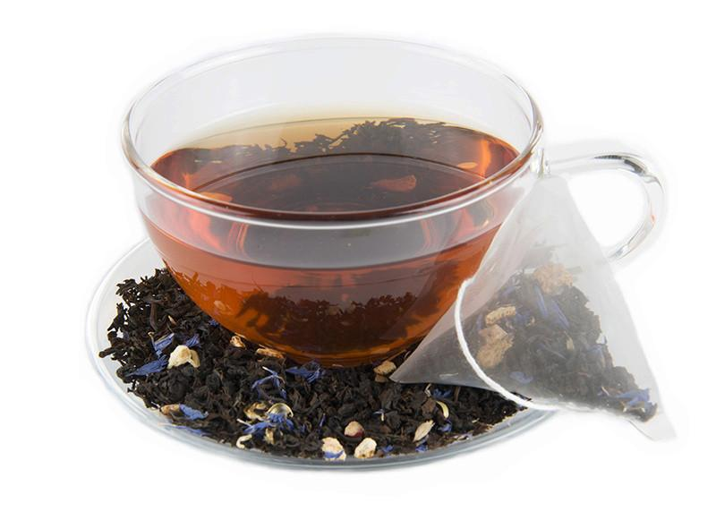

BLACK TEA
Black tea leaves are wilted after harvesting
and then rolled to release the cell sap,
which in conjunction with oxygen triggers
the fermentation of the leaf and gives it
its characteristic colour and flavour.
The wide colour spectrum of dried black teas ranges
from bright rusty red to a deep, dark brown.
After fermentation, the tea is dried
and sorted by leaf grade, from large-leaf teas
and broken to powdery fannings and dust.
GREEN TEA
In the production process of green teas,
following the wilting, various heating methods
are used to prevent fermentation,
e.g. steaming (Japanese method) or
roasting (Chinese method).
The tea thus retains its green leaf colour,
which can range from a light,
silvery green to a deep, dark green.
Depending on the variety,
the flavour varies from bitter to pleasantly sweet and aromatic.
OOLONG TEA
Oolong means ‘black dragon’ in Chinese.
Oolong teas are semi-fermented teas
in which the fermentation process is interrupted.
Depending on when the fermentation is interrupted,
a differentiation is made between green and black oolongs.
Their flavour is slightly sweet,
even with an elegant, flowery, peach-like note.
WHITE TEA
White teas are among the mildest and
most exquisite varieties in the world.
For white tea, the young, unopened leaf buds are harvested.
Their silvery down gives the tea its characteristic,
light appearance. The leaf buds are only briefly air-dried,
and then sorted by hand.